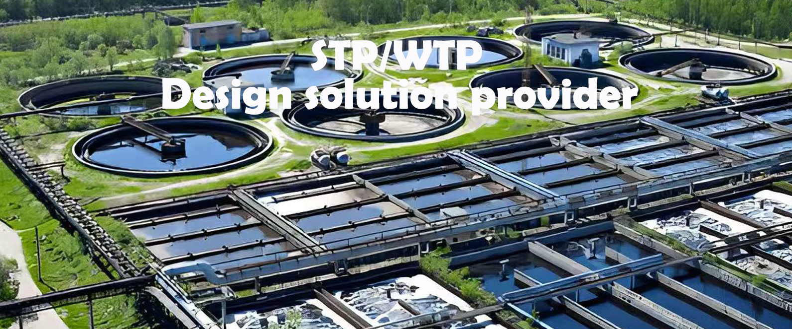

Sludge is flocculated with polymer and fed into the thickening section, where gravity separates free water through the gaps between the fixed and moving rings. The dewatered sludge is then conveyed and pressed along the screw shaft in the dewatering section, where the gradually decreasing pitch and the outlet resistance build the pressure that squeezes out the remaining water.
Because the rings are self-cleaning — the moving rings wipe the fixed rings on every revolution — the machine does not blind over the way a belt or plate press does. There is no filter cloth to replace and no wash water to supply.
Size the machine from the dry solids load, not from the sludge flow alone. Daily sludge volume ÷ 24 gives m³/h; read across at your inlet solids concentration; then take the model one step above and leave 20–30% margin.
Worked example: 200 m³/d of sludge at 5,000 mg/L → 8.3 m³/h → model 302 (12 m³/h at 5,000 mg/L) with margin.

At low concentrations the limit is hydraulic; at high concentrations it is the dry solids load. Both are shown, which is why the table reads the way it does.
| Model | DS capacity kg/h | 2,000 mg/L | 5,000 mg/L | 10,000 mg/L | 20,000 mg/L | 25,000 mg/L | 50,000 mg/L |
|---|---|---|---|---|---|---|---|
| 131 | 6-10 | 3 | 1.2 | 1.0 | 0.5 | 0.4 | 0.2 |
| 132 | 12-20 | 6 | 2.4 | 2.0 | 1.0 | 0.8 | 0.4 |
| 201 | 9-15 | 4.5 | 1.8 | 1.5 | 0.75 | 0.6 | 0.3 |
| 202 | 18-30 | 9 | 3.6 | 3.0 | 1.5 | 1.2 | 0.6 |
| 251 | 20-35 | 10 | 4.0 | 3.5 | 1.75 | 1.4 | 0.7 |
| 301 | 30-50 | 15 | 6.0 | 5.0 | 2.5 | 2.0 | 1.0 |
| 302 | 60-100 | 30 | 12 | 10 | 5.0 | 4.0 | 2.0 |
| 303 | 90-150 | 45 | 18 | 15 | 7.5 | 6.0 | 3.0 |
| 351 | 60-100 | 30 | 12 | 10 | 5.0 | 4.0 | 2.0 |
| 352 | 120-200 | 60 | 24 | 20 | 10 | 8.0 | 4.0 |
| 401 | 90-150 | 45 | 18 | 15 | 7.5 | 6.0 | 3.0 |
| 402 | 180-300 | 90 | 36 | 30 | 15 | 12 | 6.0 |
| 403 | 270-450 | 135 | 54 | 45 | 22.5 | 18 | 9.0 |
| 404 | 360-600 | 180 | 72 | 60 | 30 | 24 | 12 |
Figures are theoretical. Select the model slightly above the calculated value, and confirm against the approved drawing before ordering. Actual capacity depends on sludge characteristics, flocculation and polymer dosing.
Two numbers are enough for us to name the model and send the dimension drawing.